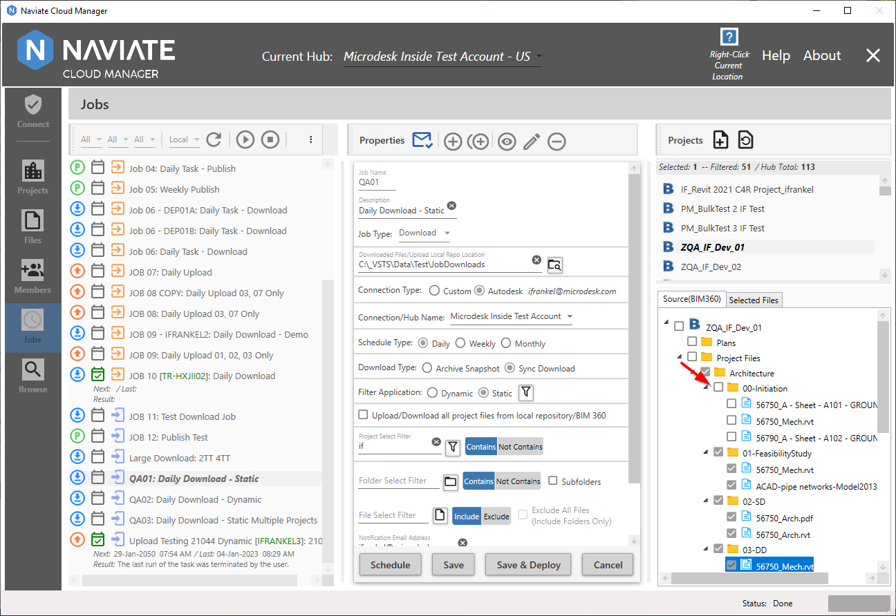
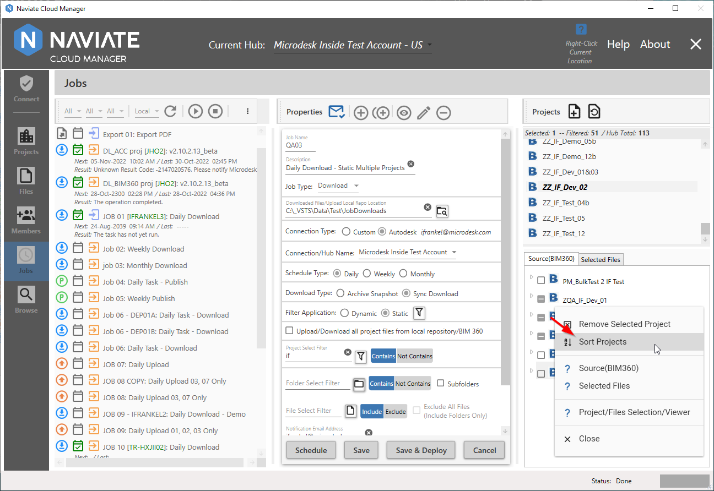

Source (BIM360)
Source(BIM360) displays all selected projects, folders and files for the current Job. To perform this task, it incorporates several different tools and functions.
Adding a Project to the Source(BIM360) display
Regardless of whether the Filter Application is set Static, or Dynamic, the process for adding a project is always the same.
Simply select the Project to be added and press the Add Selected Project button. Once the project has been added, it will take on one of two different appearances and functionalities, depending on whether the Filter Application setting for the current job is Static or Dynamic.
Static/Dynamic File Selection and Display
The Source(BIM360) display is dual-purpose, depending on the Filter Application setting for the current job. The display and operation varies slightly, depending on whether the current Filter Application is set to Static or Dynamic.
Static Filter Application
When Filter Application is set to Static, it provides the ability to select and deselect each file that will be processed by the job.
General Folder and File Display
Without any Folder or File filters set, the project tree view is fully presented, containing a checkbox that is available for selecting folders and files.
For example, the following represents a Static download job with a filtered project list displayed. Pressing the Add Selected Project button (above) produces the following result (below).
Since this is a Filter Application of Static, the user is now free to select the specific files to be processed.
There are several ways to select file. For example, clicking on a folder automatically selects all files within the folder.
This also works the same when clicking on a folder that has both child folders and files.
Likewise, clicking on a checked folder — or subfolder — deselects the subfolder's contents, both folders and files alike.

No matter the level, clicking will always select or deselect a folder's contents. This works even at the project level.
Tip — Select all files in a project by clicking the project, then just deselect the files that should not be processed.
Filtered Folder and File Display
Naviate Cloud Manager supports the filtering not just of Projects, but also of Folders and Files.
Filtered folders and files still appear in their designated location in the project tree. However they appear with a strike out line going through them, to indicate they have been filtered out. The advantage of this approach is to clearly indicate the results of all Folder and File filter settings. This either confirms the accuracy of the current settings — or indicates the need for further filter refinement.
Static Filter Application
When Filter Application is set to Dynamic, it provides a display of all files that would be currently selected, based on the current Project Select Filter, Folder Select Filter, and File Select Filter settings.
Here is a display containing no additional Folder or File filter settings:
Unlike a Filter Application setting of Static, the Dynamic display simply shows all folders and file included in the selection. There is no provision to either select or deselect them.
As with Static, the Dynamic display also indicates the result of Folder and File filters being applied to the project.
Similar to the case with Static, when a job is set to Dynamic, the strike through is also used to indicate those folders and files that are filtered out.
Remove Selected Folders
A standard part of maintaining the list of selected projects, in addition to adding new projects from the Project Selection List, is removing them.
Removing projects is performed by selecting the project to be removed then right clicking to bring up the popup menu.
From the popup menu (above), select the Remove Selected Project item. As shown below, the project is immediately removed.
By being able to add, remove, or re-add projects to the list, you are able to maintain the list of project as deemed necessary.
Sort Projects
By default, when adding projects to the Source(BIM360) project tree view, these projects are automatically sorted in the usual, standard, alphanumeric order.
However, there may be times when, as a result of removing (see preceding sub-section), the projects appear out of order. If this should ever occur, the Sort Projects selection is available from the popup menu to resolve the situation.

Sort Projects, as the name implies, sorts all projects in the list in the proper order.
Note — Sort Projects was added to Naviate Cloud Manager in the early days of its existence, predating much of the recent work that has gone into developing the Source(BIM360) tree view display. In other words, don't be surprised if the project list always sorts correctly on it's own after adding new projects and you never have to use the Sort Projects functionality. However, it is still included, "just in case."